MINI PROYECTO 1 · DÍA 2BrewMaster
Autenticación y control empresarial para lotes de cerveza artesanal.
Resumen de la entrega
Durante el Día 2 BrewMaster incorporó autenticación con registro, login y JWT. Las operaciones de insumos, lotes y barriles quedaron protegidas y el panel React ahora requiere una sesión válida.
✓ API protegida
JWT con expiración, middleware Bearer y respuestas 401 para peticiones sin autorización.
✓ Seguridad
Contraseñas cifradas con bcryptjs y clave secreta configurable mediante backend/.env.
✓ CRUD completo
Crear, listar, consultar, actualizar y eliminar en las tres entidades empresariales.
✓ Relaciones
Los barriles validan que el lote relacionado exista antes de guardarse.
Flujo de autenticación
La interfaz presenta registro e inicio de sesión, guarda el token de sesión y muestra el panel únicamente después de validar /api/auth/me.
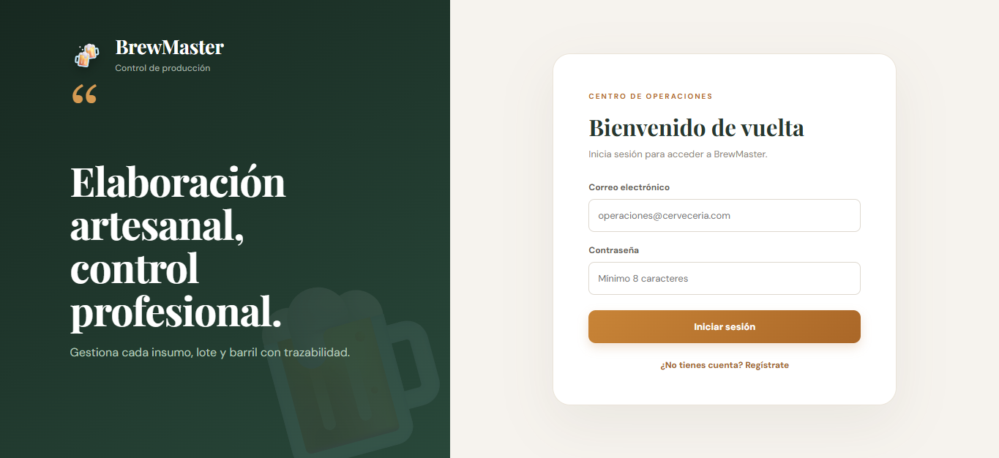
Figura 1 · Inicio de sesión con correo y contraseña.
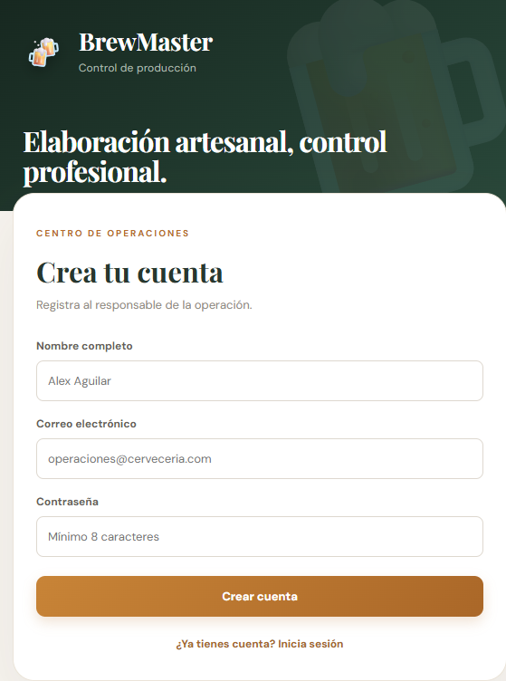
Figura 2 · Registro de usuario con validación de contraseña.
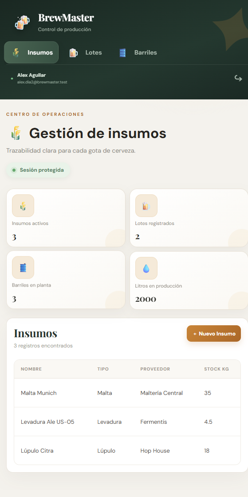
Figura 3 · Panel protegido después de autenticar al usuario.
CRUD y relaciones
Las tablas mantienen la interfaz visual del Día 1 y ahora trabajan con el token. La pantalla de barriles carga los lotes desde la API para evitar relaciones inexistentes.
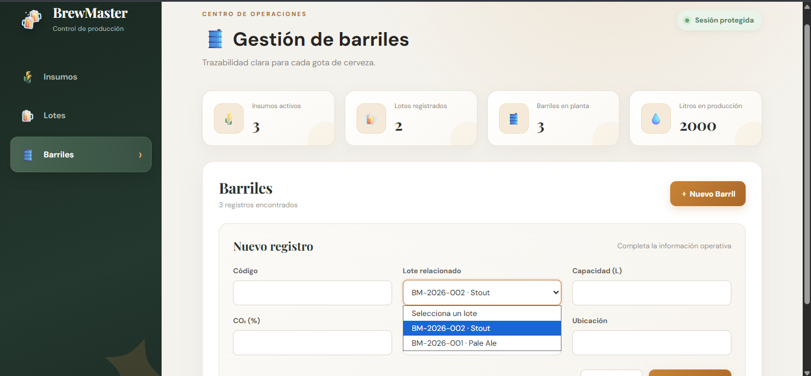
Figura 4 · Formulario de barril con selector de lote relacionado.
Pruebas automatizadas realizadas
| Prueba | Resultado |
|---|
| Registro y hash bcrypt | OK · password no se devuelve |
| Login y emisión JWT | OK · token con expiración |
| Ruta sin token | 401 No autorizado |
| CRUD de insumos | POST, GET, PUT y DELETE |
| Validación de datos | 400 Datos inválidos |
| Relación barril-lote | 404 si el lote no existe |
Archivos complementarios
La investigación completa sobre JWT se encuentra en docs/06-investigacion-token-jwt.md. La colección Postman del Día 2 está en postman/BrewMaster.postman_collection.json.
Pruebas de API en Postman
Las siguientes evidencias muestran autenticación, protección de rutas, validaciones y consumo autenticado del CRUD.
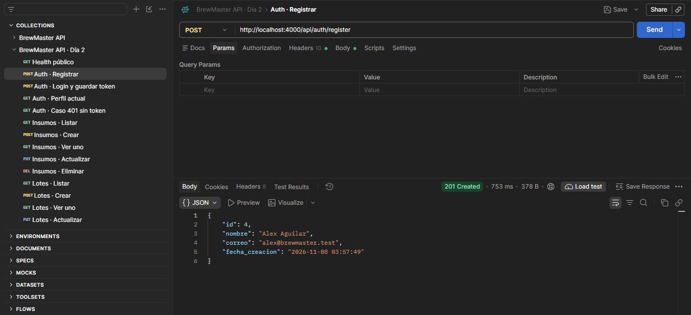
Figura 5 · Registro exitoso: 201 Created.
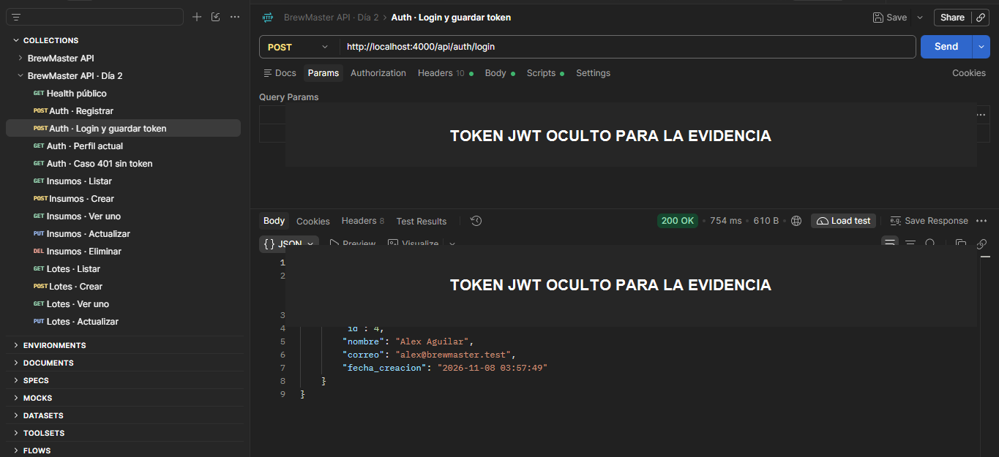
Figura 6 · Inicio de sesión: 200 OK y token JWT.
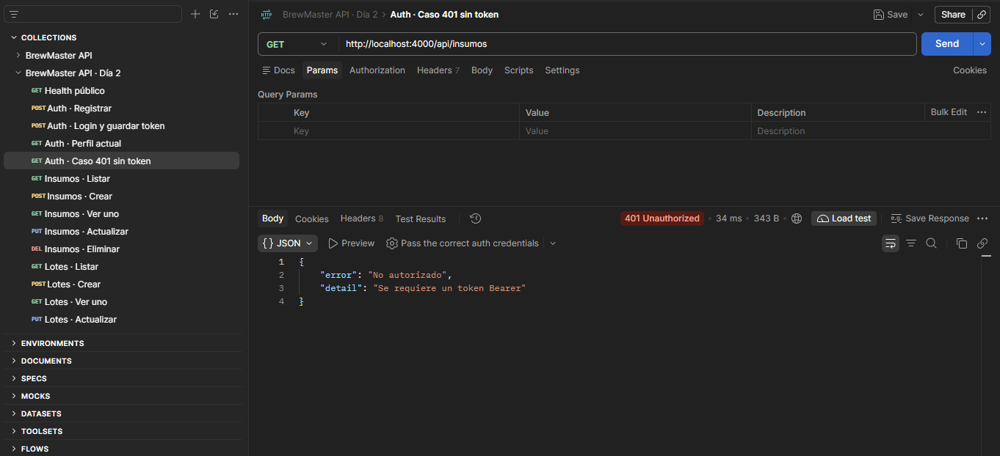
Figura 7 · Ruta protegida sin token: 401 Unauthorized.
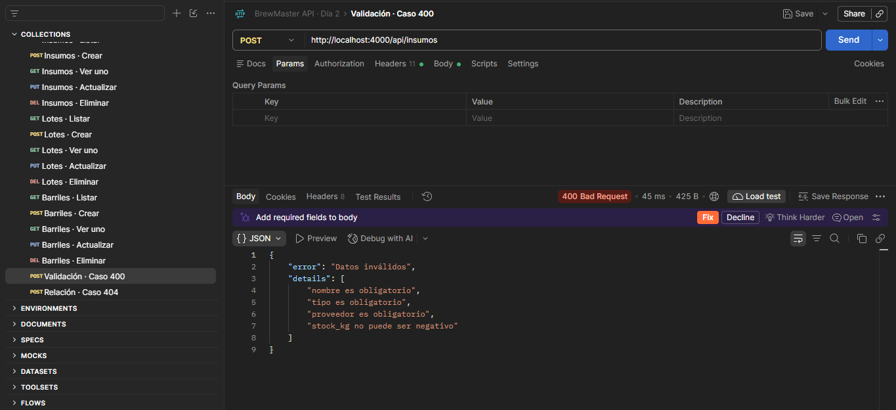
Figura 8 · Validación de datos: 400 Bad Request.
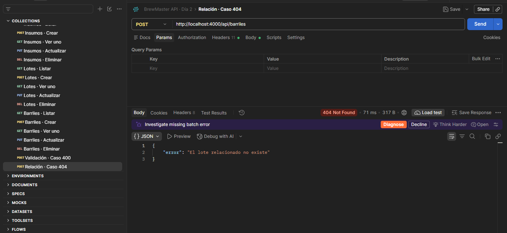
Figura 9 · Relación inexistente: 404 Not Found.
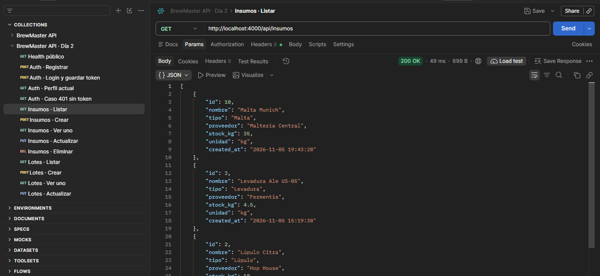
Figura 10 · Listado autenticado de insumos: 200 OK.
Persistencia en MySQL Workbench
Estas evidencias comprueban que BrewMaster utiliza la base MySQL brewmaster, consulta sus tablas y conserva los registros creados desde la interfaz React.
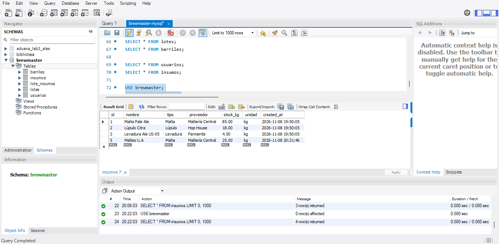
Figura 11 · Esquema brewmaster y registros iniciales en MySQL Workbench.
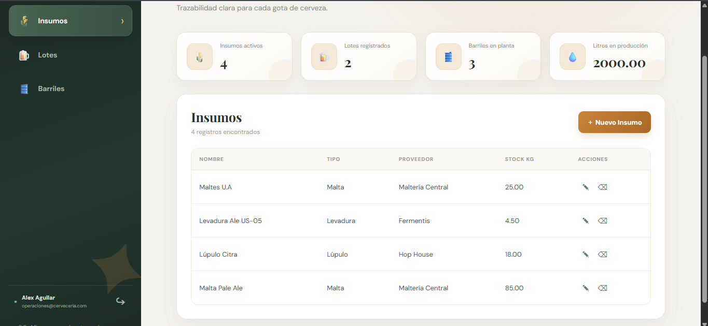
Figura 12 · Consulta de insumos almacenados en MySQL.
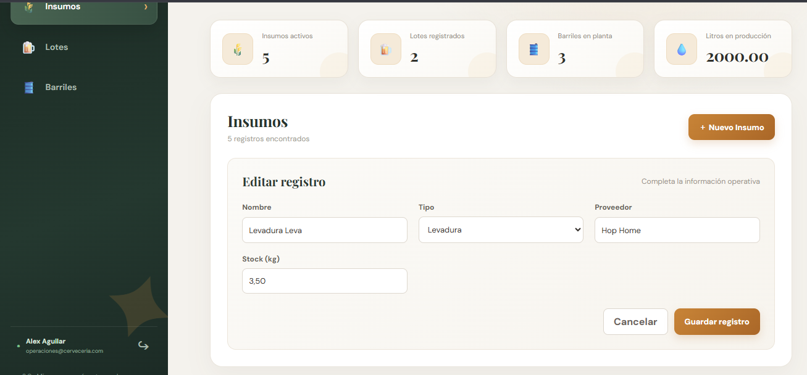
Figura 13 · Edición de un insumo desde el front end.
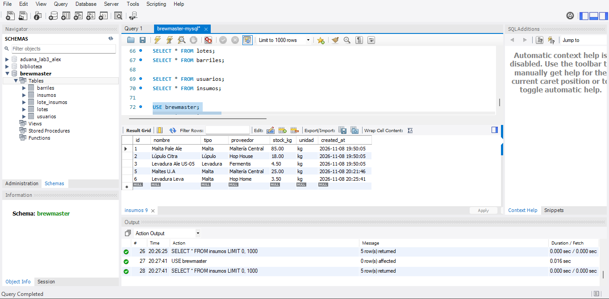
Figura 14 · Registro actualizado y persistido en MySQL después de usar React.
Verificación final de la base de datos
La consulta final confirma que MySQL Workbench devuelve usuarios registrados, lotes y barriles almacenados en el esquema brewmaster.
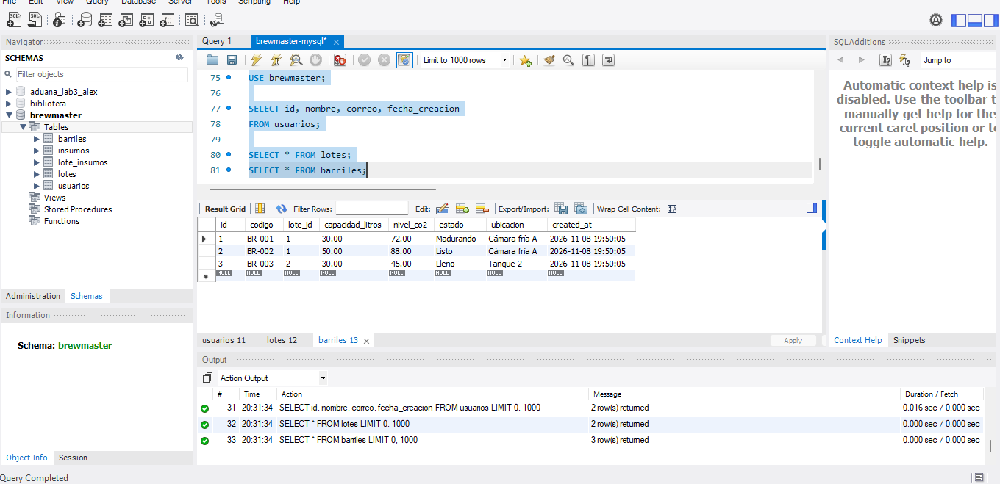
Figura 15 · Consultas de usuarios, lotes y barriles con registros devueltos.